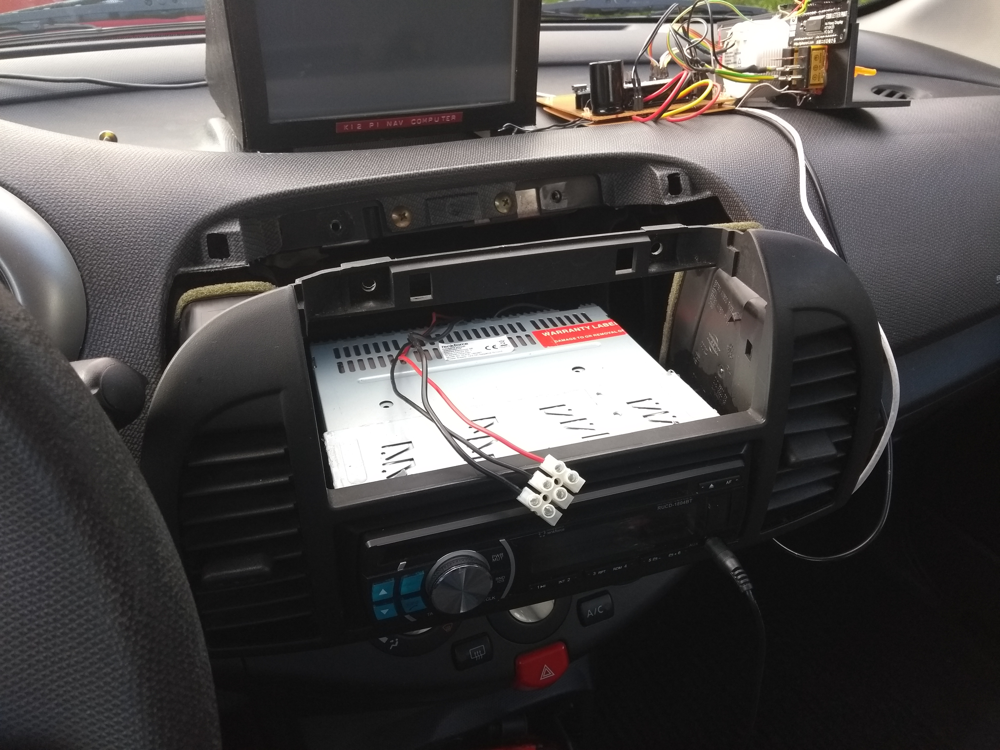
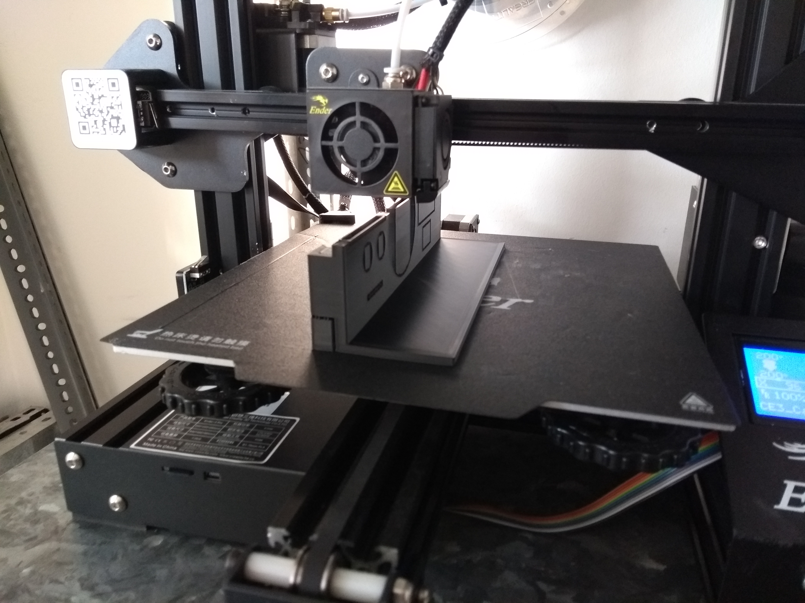

Car Gauge Unit
Car Gauge Unit
A project involving Arduino, 3D-Printing and my car
This project requires a bit of background information: My car has two standard DIN slots.
The lower one is used up by the car radio, but the upper one just contained a laughably small second glovebox.
Then suddenly, I had an idea: My car is too old to calculate its gas mileage itself, so I might as well add in a device capable of doing that. And what better place to put it than into the spot where that glovebox sat?

Of course, an arduino with a display wouldn’t take up all that space. So I came up with more things to add in.
The most visible one is the voltmeter which is directly connected to the 12v grid of the car. Since it’s unregulated, I can easily check the voltage from the battery when the engine is off, and the voltage of the alternator when the engine is running.
Since I needed a 5v power source for the arduino anyway, I bought a power brick that was way overkill (it supplies up to 3A!) and added it in. Now I could power my Rasperry Pi Satnav (on top of the dashboard) from here too! The satnav doesn’t need to always be on, so I added a switch. Another switch joined it, this time for selecting which horn I’d like to use (I had a second one put in). Finally, I added a temperature display too.
Building commenced: 
I 3D-printed the enclosure, only to find out it couldn’t stand the heat of a car left in the sun. Also, it didn’t fit very well. The final version I ended up using was the 3rd print, for which I used PETG filament becausee of its better ability to withstand high temperatures.
The electronics looked like this at first:

There was of course a problem with this approach: Everything was a tangled mess of wires. This led to some criticism and finally my decision to desolder everything and build a new board from scratch which had all the parts on it.
I finalized the design to fit into the slot as well as possible, then added another gauge in (which I’m planning on using as an acceleration display). The red retro labels for the switches were made with a very old labelmaker I had laying around. After all that work, here’s the final result: